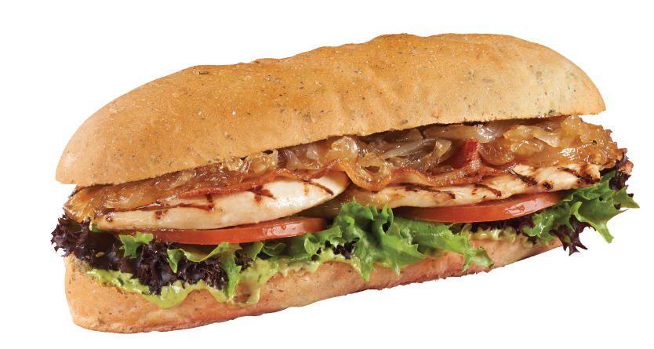
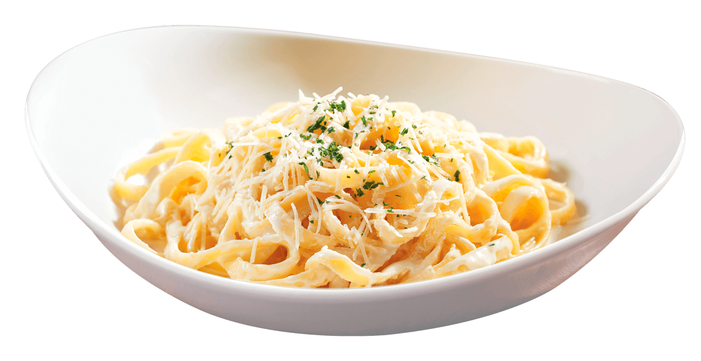
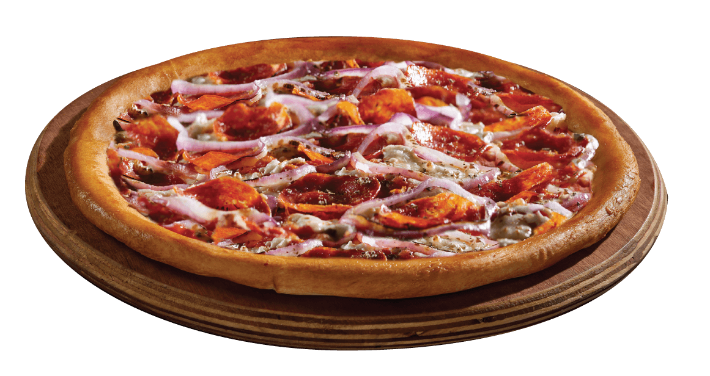
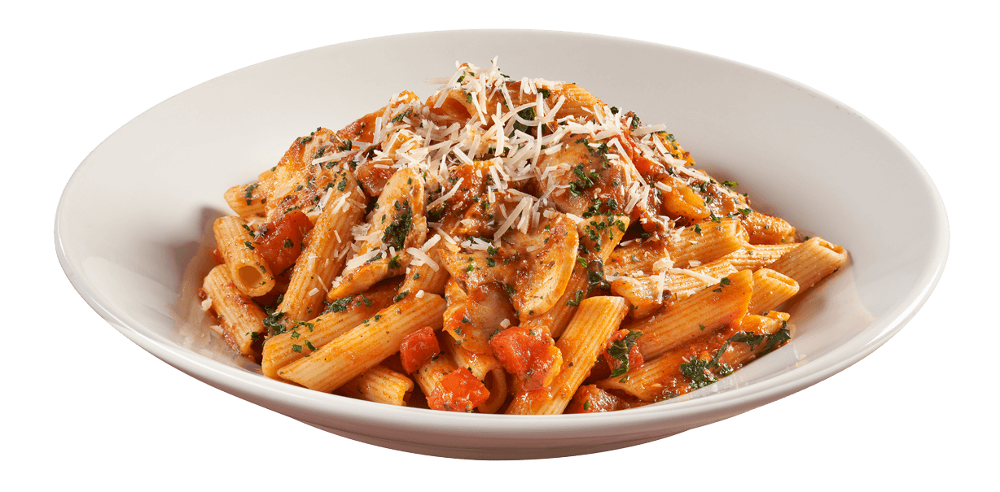
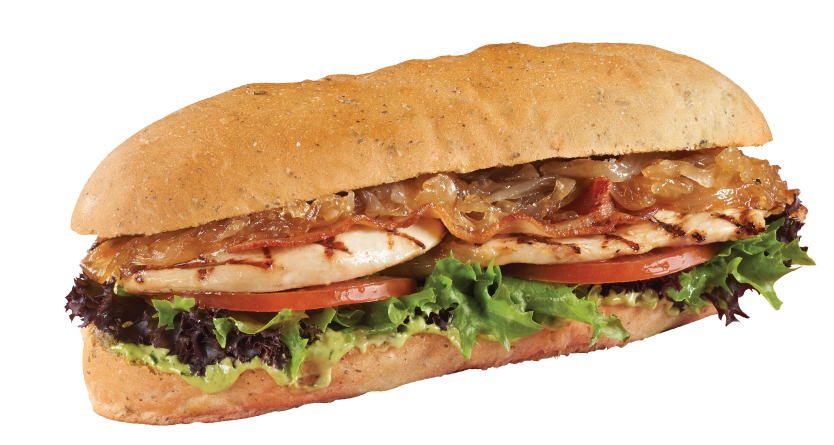
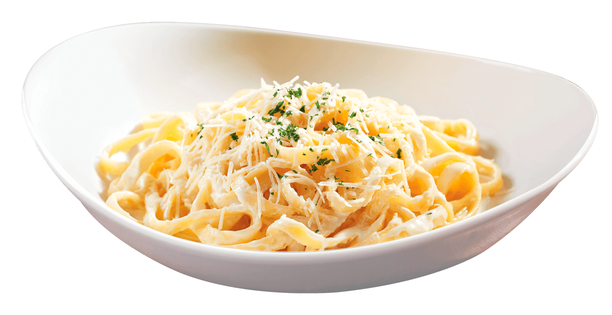
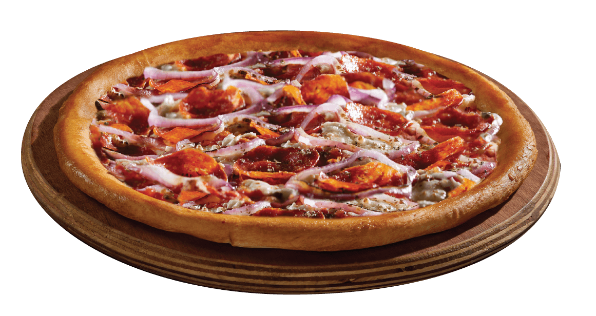
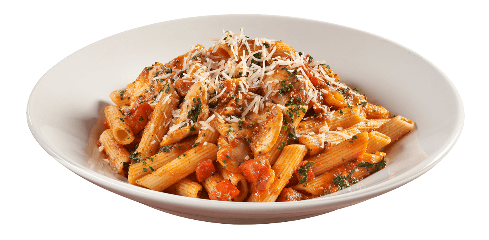

Restaurant Sempiterno
Especialidades del mes
Deja que sempiterno te concienta con sus especialidades deacuardo al mes.
¡Tenemos las mejores opciones para compartir y consentir a la reina de la casa durante todo el mes!
Enchiladas.
Nuestras deliciosas enchiladas en la salsa de tu preferencia: verde, roja, mole o suiza, rellenas de pollo (120 g), queso (112 g) o huevo revuelto (3 piezas), acompañadas de frijoles refritos.

 Aglio olio e peperoncino.
¡Una de las recetas más populares de Italia! Delicioso spaghetti salteado con aceite de oliva, perejil y peperoncino con alcachofa y jitomate cherry. Con un ligero sabor a ajo y pimienta negra. Agrega camarones (5 piezas / 64 g) o pechuga de pollo asado (170 g).
Aglio olio e peperoncino.
¡Una de las recetas más populares de Italia! Delicioso spaghetti salteado con aceite de oliva, perejil y peperoncino con alcachofa y jitomate cherry. Con un ligero sabor a ajo y pimienta negra. Agrega camarones (5 piezas / 64 g) o pechuga de pollo asado (170 g).
 ¡ Juntos celebremos a PAPÁ!
¡En este mes tan especial tenemos para ti nuestros mejores platillos. deja que SEMPITERNO concienta tu paladar!
PANINI LIGURIA
Deliciosa pechuga a la parrilla, acompañada de cebolla caramelizada, tocino, lechuga, jitomate y mayonesa con pesto en nuestro pan de finas hierbas.

FETTUCCINI ALFREDO
La combinación más italiana. Disfruta una deliciosa pasta con queso parmesano y si quieres un sabor aún más rico, agrega camarones (5 piezas / 64 g) o pechuga de pollo asado (170 g).
·El vino tinto queda perfecto con este platillo.

¡Ven a disfrutar de una deliciosa comida con todos tus amigos!
PIZZA PEPERONI
Abundante porción de peperoni (46 g), queso mozzarella fresco y aros de cebolla morada. ¡La preferida de todos!

PENNE ALL’ARRABBIATA ITALIANNI’S
¡El sabor único de Italianni’s! Nuestra tradicional receta de pasta al dente con salsa pomodoro, albahaca fresca, champiñones rostizados, queso parmesano y un toque picante.

¡ Juntos celebremos a PAPÁ!
¡En este mes tan especial tenemos para ti nuestros mejores platillos. deja que SEMPITERNO concienta tu paladar!
PANINI LIGURIA
Deliciosa pechuga a la parrilla, acompañada de cebolla caramelizada, tocino, lechuga, jitomate y mayonesa con pesto en nuestro pan de finas hierbas.

FETTUCCINI ALFREDO
La combinación más italiana. Disfruta una deliciosa pasta con queso parmesano y si quieres un sabor aún más rico, agrega camarones (5 piezas / 64 g) o pechuga de pollo asado (170 g).
·El vino tinto queda perfecto con este platillo.

¡Ven a disfrutar de una deliciosa comida con todos tus amigos!
PIZZA PEPERONI
Abundante porción de peperoni (46 g), queso mozzarella fresco y aros de cebolla morada. ¡La preferida de todos!

PENNE ALL’ARRABBIATA ITALIANNI’S
¡El sabor único de Italianni’s! Nuestra tradicional receta de pasta al dente con salsa pomodoro, albahaca fresca, champiñones rostizados, queso parmesano y un toque picante.
